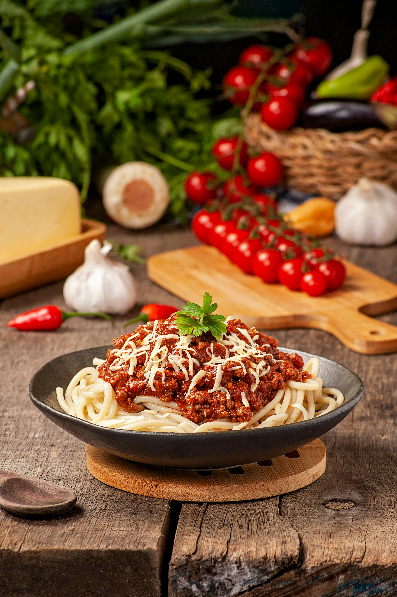

Welcome to Our Vegan Food Journey
Welcome to our plant-based haven! At [Your Restaurant Name], we believe that food should nourish the body, mind, and soul. Our mission is to create flavorful, wholesome, and environmentally-friendly meals that everyone can enjoy, whether you're a long-time vegan or just beginning your journey into plant-based eating.
Why Vegan?
Adopting a vegan lifestyle isn't just about the food you eat—it’s about making a positive impact on the planet, your health, and animal welfare. Whether you’re looking to reduce your carbon footprint, improve your health, or simply try something new, we’ve got a variety of delicious dishes to help you explore the world of vegan cuisine.
Our Philosophy
We source fresh, local, and sustainable ingredients to create meals that are bursting with flavor and nutrients. Each dish is thoughtfully crafted, free from animal products, and packed with plant-based goodness. From hearty soups to satisfying salads, our menu is designed to offer something for everyone.
A Taste of Compassion
Being vegan is about more than food—it’s a movement for compassion, sustainability, and a better future. We want to share that message with you, one meal at a time. We invite you to explore our menu, try new dishes, and join us on this journey toward a healthier and more sustainable way of living.
About
Veganism is more than just a diet; it’s a lifestyle and philosophy that seeks to avoid the use of animal products in food, clothing, and other areas of life. Rooted in compassion, sustainability, and health, veganism has grown from a niche movement into a mainstream choice for millions of people around the world.
What is Veganism?
At its core, veganism is the practice of abstaining from animal products. This means no meat, dairy, eggs, or other animal-derived ingredients. It’s a commitment to living in a way that reduces harm to animals and minimizes the environmental impact caused by industries that rely on animal agriculture.
Veganism isn’t limited to what’s on your plate. Many vegans also choose cruelty-free products, avoiding leather, wool, and other materials derived from animals.
The History of Veganism
The roots of veganism can be traced back to ancient cultures, many of which embraced plant-based diets for health, ethical, or spiritual reasons. However, the modern concept of veganism took shape in 1944, when Donald Watson, along with a group of like-minded individuals, founded the Vegan Society in the United Kingdom. Watson coined the term "vegan," derived from the beginning and end of the word "vegetarian," to describe someone who avoids all animal-derived products.
Since then, veganism has gained momentum, particularly in recent decades, due to growing awareness about animal rights, environmental sustainability, and the health benefits associated with plant-based eating.
Why Choose Veganism?
Animal Welfare One of the primary reasons people choose veganism is to protect animals. Modern farming practices often involve cruelty and exploitation of animals, and choosing a vegan lifestyle is one way to take a stand against animal suffering.
Health Benefits A well-balanced vegan diet can provide numerous health benefits. Studies show that vegan diets are associated with lower risks of chronic diseases such as heart disease, diabetes, and certain types of cancer. Vegan diets are also typically lower in calories and saturated fats, making it easier to maintain a healthy weight.
The Future of Veganism
As more people embrace veganism for its numerous benefits, the future looks bright. Advances in plant-based food innovation are making it easier than ever to enjoy delicious, satisfying meals without animal products. Whether you’re vegan for the animals, your health, or the planet, the movement continues to grow and inspire change.
By choosing to adopt a plant-based lifestyle, you can make a lasting difference—not only in your own life but also in the lives of countless animals, the planet, and future generations.
Vegan Lentil Soup
A hearty soup made with brown lentils, carrots, celery, and herbs. Packed with protein and fiber, this dish is a comforting, nutritious option for any meal.

Quinoa Salad with Avocado and Chickpeas
A refreshing salad with protein-rich quinoa, creamy avocado, and chickpeas. Light yet filling, dressed in a zesty lemon-tahini dressing.

Vegan Tacos with Jackfruit
Jackfruit cooked in bold spices, mimicking pulled pork, served in soft tortillas. Topped with fresh salsa, guacamole, and lettuce for the perfect bite.
Vegan Spaghetti Bolognese
A vegan twist on the classic, using lentils and mushrooms for a rich tomato sauce. Served over pasta, this dish is hearty and full of flavor

Vegan Sweet Potato and Black Bean Burritos
Roasted sweet potatoes and black beans wrapped in a tortilla with avocado and cilantro. A flavorful and satisfying burrito with plant-based protein.

Vegan Chickpea “Tuna” Salad
Mashed chickpeas mixed with vegan mayo, celery, and lemon juice. A creamy and flavorful alternative to traditional tuna salad, perfect for sandwiches or wraps.
Vegan Mushroom Stroganoff
Sautéed mushrooms in a rich, creamy vegan sauce, served over pasta or rice. A hearty and comforting dish that’s perfect for dinner.
Vegan Chocolate Avocado Mousse
A velvety dessert made with ripe avocados, cocoa powder, and maple syrup. Rich, creamy, and indulgent, this mousse is a guilt-free treat.